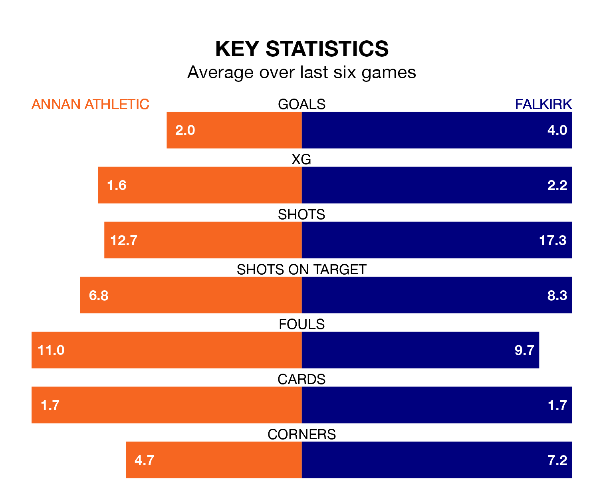

Annan Athletic host Falkirk in Saturday's match at Galabank looking to bounce back from defeat last time out in League One.
The Galabankies, who sit eighth in the league after 34 games, fell to a 1-2 away defeat to Edinburgh City on April 20.
They face a Falkirk side who secured a draw in their last match, a 2-2 tie with Kelty Hearts, and who sit first in the table.
With 91 goals in 34 games so far this season, Falkirk are the league's highest scorers with 2.7 goals per game. And they are conceding fewer than average, letting in 23 goals at a rate of 0.7 per game.
Annan, meanwhile, are below average scorers, with 1.5 goals per game, compared to a league average of 1.6. They have conceded 1.9 goals per game.
In Callumn Morrison, the Bairns have the league's sharpest shooter so far this season. He has notched 23 goals in 30 appearances.
Athletic's top scorers, with 10 goals in 30 games each, are Thomas Goss and Aidan Smith.
The Galabankies are in reasonable form in League One, with three wins and two draws from their last six games.
With five wins and a draw over that period, the visitors' form is better – they have taken 16 points from 18, compared to the home team's 11.
In the last three years, Annan and Falkirk have played each other on three occasions. Falkirk won two of them and they drew once.
Their last meeting was on March 2, when they played out a 1-1 draw.
Updated: 07:59 (UTC), 26/04/24